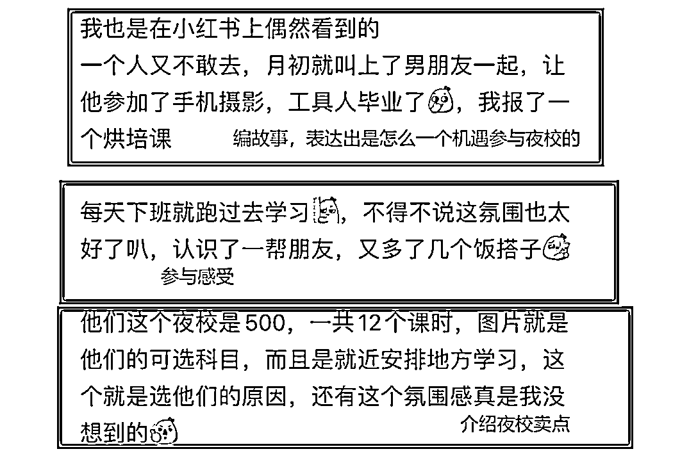

来源：https://k8ujba4r5x.feishu.cn/docx/KkjtdSL87obZa9x4xqkcRgbanoP
这篇帖子在今年已经发过了，现在属于修改版本，各位圈友大家好，我是八斤，如果你准备下场干夜校，希望你能看看这篇帖子，也算是作为过来人的实操经验
夜校现状，有自己在当地做同城的，也有跨省做同城流量的，布局小红书、抖音、视频号三个主流平台
拿这个账号举例，小红书上也是可打跨省本地同城流量的，下篇同城亲子研学赛道会讲到
这篇讲小红书上素人号获客同城夜校的实操玩法
关于小红书获客的玩法，可以学习一下圈友这篇文章，很干，值得反复咀嚼
“玄学“，宁可信其有，不可信其无；只要你没做起来，复盘的时候别把错都归于没搞”玄学“就好
我对“玄学”的看法是这样的
抖音，不相信任何玄学，用内容去做所谓的养号，前期以打账号标签为导向，内容为王；
小红书，相信一半的玄学，让系统初步知道我的喜好，比如夜校，只要每次刷新推荐页，第一条推荐的是夜校就行，其次发布笔记浏览达到200及以上即可
新号做引流前，可以发一点泛流量贴破权重，什么是泛流量贴？
笔记可以是搞笑、吐槽、杀掉等等，能引起大家讨论的，笔记内容可以在小红书平台找，也可以到皮皮虾、抖音、视频号、快手等自媒体平台找，发引流贴的时候，把权重贴隐藏就好了
素人号=把小红书当朋友圈发
比如搞笑女，就可发一些搞笑的、沙雕一点的笔记，在皮皮虾上找，比比皆是
小红书上的用户虽然是高净值，消费意愿强，但，她们不是傻子，对硬广还是非常排斥的；在小红书上种草的这种氛围还是很浓厚的，所以，用素人号这种软广的形式，非常适合
看一下这篇笔记的内容，感受一下素人号
案例：来源长沙同城做夜校的伙伴，笔记是抄袭我的，应该也是生财圈友，拿做案例不过分吧
既然前面定位是素人号，所以，要避免每条笔记都是软广推荐笔记，软广我们也要穿插发
素人笔记的制作方式很简单，其实就是写电商买家秀评价，对于我们来说就是编故事，把故事发在小红书上
文案架构：
第一段，编个故事，写出自己是怎么找到并参与进来的
第二段，写感受，写出自己体验感受
第三段，介绍夜校卖点
我把我这篇笔记的文案分享出来，大家感受一下

关于内容制作灵感
01：收集客户需求、痛点，做好表格
02：同行评论区收集需求和痛点
至于主图图片，在夜校这个赛道来看，不需要太花哨，毕竟，夜校这个词，热度是在的。将夜校课程表，以及上课的图片，修改图片MD5值，或者拼接就好了
说变现前，说一下我实操过程出现的问题
01：客户不聚集，很多课，客户感兴趣，由于距离会止步
02：交付周期长，单点商家承接不过来
03：萝卜青菜各有所爱，有些地区的课程客户报名数量，不足以开班
用这个方式我们就需要清楚自己的定位，就是搞客资的，搞流量的，纯搞流量
首先想清楚他们的内容会在哪些平台出现，对于我们搞流量的应该都要知道
小红书、抖音是主阵地，我们就在里面搜关键词：地名（长沙）+夜校，或者抖音上就去夜校话题里找，小红书就在文案标签里找，就会出现大量的内容
找到之后，就顺势而为，加到他们的微信，然后去谈流量合作的形式，谈下来最低保证要30%的分润，尽量去往4-5去谈
注意这时候我们就要进行筛选，不是所有的夜校机构都知道合作，从以下几个方面来筛选
01：必须是夜校机构二线资源，不要三线、四线这种资源
02：夜校机构成立时间，上面的夜校问题，有大部分机构考虑退场，甚至已经退场不退客户押金，可恶至极
03：有没有线下场地
..........
找到一个好的合作伙伴，这事才能做的久，大家才能共赢，有激情
说到这，不得不提，在长沙我找的夜校机构，两位大哥人很好，客服的事情都帮我解决了，分润也很高，很感恩这两位大哥，也是咱们的圈友
优点：
对接同城大量夜校的机构，一个机构手里的商家50个，那么我们对接2、3、4、5.......,个，我们手里就有很多个商家，能有很多课程供客户，供需力度会比自己做夜校机构强，自然转化率也会高很多
缺点：
利润方面，对接机构我们就相当于对接的二线资源；商家、夜校机构，就需要拿走部分利润
从长线来看，这个方式很适合我们这种个体玩家，第一我们跟夜校机构合作，私域自己囤着，自己拉群，把对接的资源整合出来一个文档
当私域量你觉得够的时候，可以自己去对接商家合作，”骑驴找马“这个词用在这合适还是”李鬼李逵“用在这合适，哈哈哈哈
不管怎么样私域先囤住了
还是一样的，我们要清楚这些商家能在哪些平台会出现，抖音？美团？高德？
像高德，会有商家电话，直接打过去，谈合作，不用怕谈崩，不谈崩几个，你都不会谈，这是大实话
现在做这个事情，不要盲目去做，既然有大量同行了那就要有自己的规划
01：什么样的课程是比较火爆的？
02：商家位置方不方便？优先地铁口附近
03：都有哪些课程？
........
做这种有同行的事情，我们必做的事情就是要潜伏到同行的群里，摸清他们的火爆课程，都有哪些课程，像刚开始入场的小白进场，就要把同行的优点给复制出来，尽量把缺点规避掉，没必要踩到的坑尽量不去踩
对接商家合作
01：商家场地环境
02：服务质量
03：课程大纲及介绍
04：合同制约履行义务
有些事情，没法跟大家说清楚，需要我们去实操，从过程中发现问题，然后解决
往期帖子：
https://scys.com/home/articleDetail/xq_topic/584444554581554